Дизайн как он есть: форма, функция, бренд, опыт и другое
Наталья Колос / 13.01.2017606
Везде, куда бы мы ни отправились, нас окружает плохой дизайн: от сидений в самолете, искривляющих осанку и до безвкусных авто. Ранее зеленые и синие пейзажи теперь заасфальтированы. Нас окружают упущенные возможности, способные привнести восторг и радость в жизни людей.
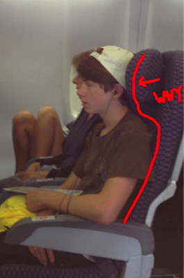
Вещи с плохим дизайном только приводят в недоумение и вызывают грусть, как уродливое здание в вашем районе, заставляющее морщиться каждый раз, когда вы его видите, как пульт для TV со слишком большим количеством кнопок или программное обеспечение, которое попросту не будет работать. Такие объекты и вызываемые ними переживания — результат недопонимания, жадности, отсутствия эмпатии и внимания. Плохой дизайн особенно удручает, учитывая ценовую политику на этой планете. Иногда кажется, что мы наполняем мир мусором.
По мере развития индустрии высоких технологий, мы стали свидетелями большего интереса и инвестиций в области дизайна. Компании пришли к пониманию, что дизайн может быть конкурентным преимуществом, которое отличает их от конкурентов. Наше понимание того, что такое «дизайн», углубляется на протяжении многих лет и выходит за рамки эстетики в сторону навыков решения задач. За последние несколько десятилетий в индустрии программного обеспечения мы называем продукт «хорошо спроектированным», когда он полезен, удобен и желателен.
Что я имею в виду? Позвольте дать вам некоторый контекст, чтобы рассмотреть на мгновение различные уровни понимания дизайна.
Дизайн = форма
Основное понимание того, что такое дизайн, как правило, относится к эстетике. Универсальные принципы красоты, такие как золотое сечение, правило третей или принципы близости, выравнивания, контрастности и повторения, сообщают нашему врожденному чувству, что красиво, а что — нет. На этом уровне понимания дизайна, мы думаем о дизайне, как о внешнем виде объекта, например, выглядит ли автомобиль быстрым, дорогим или мощным.
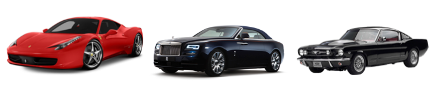
Дизайн = Функция
Но дизайн — не только то, как объект выглядит, но и как он работает. Мы считаем объект хорошо спроектированным не только тогда, когда он красив, но еще и полезен и прост в использовании. Хороший дизайн делает нашу жизнь проще, экономит наше время и снижает когнитивную нагрузку, которая, в свою очередь, уменьшает стресс в нашей жизни и сохраняет силу воли и доброжелательность по отношению к другим. В этом смысле, хороший дизайн, как холодильник — когда он работает, никто не замечает, но когда нет, он, конечно, воняет.
Дизайн = Бренд
Когда компания последовательно поставляет эстетические и функциональные качества, дизайн становится брендом. Например, транспортное средство, с помощью которого компании создают эмоциональную связь со своими клиентами. Потребители предпочитают ассоциировать себя с определенными брендами, потому что бренды воплощают и представляют собой ценности и идеалы, к которым обращаются.
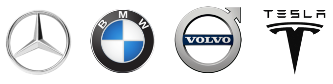
Дизайн = Опыт
К концу 90-х годов, удачный дизайн был своего рода дирижером памятных событий для клиентов, и сама память становилась продуктом опыта. Возьмите, например, кукол American Girl. Недостаточно просто купить куклу. В плане экономики, теперь вы можете создать свою собственную куклу, изменить ее так, чтобы она выглядела как вы, устроить ей спа-день или нарастить ей волосы. Речь не только о покупке куклы, но получении целого опыта приобретения и обладания этой куклой. Дизайн выходит за рамки продукта и бренда и охватывает весь опыт клиента.
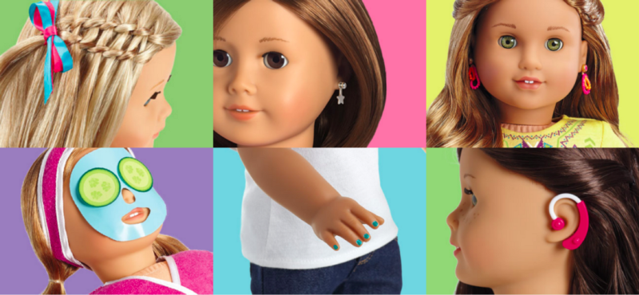
Дизайн-мышление = Решение проблем
Термин «дизайн-мышление» был популяризирован IDEO и Стэнфордским университетом в течение последних 10 лет. Дизайн-мышление относится к набору когнитивных процессов, направленных на решение проблем. Различные этапы процесса дизайн-мышления включают в себя определение проблемы, построение эмпатии для пользователей, создание множества идей, прототипов возможных решений, сбор обратной связи и итерации. При таком понимании дизайна, дизайн — это решение проблем.
Дизайн это термин, имеющий отношение к тому, как выглядит какой-нибудь сервис, как он ведет себя, какие эмоции вызывает, когда люди взаимодействуют с ним, какой опыт дает при взаимодействии с ним, а еще образ мышления и действий для решения проблем. Это также проявление Сущности.
Дизайн = самообслуживание
Что мы подразумеваем под Сущностью? Быстрый поиск в Google дает такое определение: «сущностное бытие человека, что отличает его от других, в частности рассматривается как объект самонаблюдения или рефлекторное действие».
Любое творческое усилие является выражением человеческого духа. Когда мы создаем что-то, мы создаем внешнее выражение того, кем мы являемся, ценностей и добродетелей, которые мы усвоили. То, что мы делаем, воплощает в себе наши ценности и добродетели, и становится ощутимым выражением нашей Сущности.
Возьмите, например, дизайн одежды. В начале 1900-х годов, стильная одежда была сложной и очень дорогой. Она предназначалась, чтобы изобразить женщин нежными и пассивными и была весьма непрактичной для чего-нибудь, кроме посиделок и отдыха с гостями в гостиной. Одежда сигнализировала стремление.
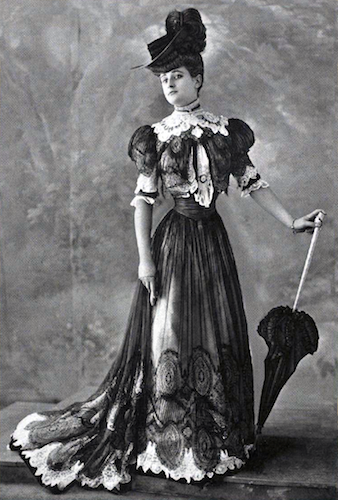
Одежда начала 1900х
Коко Шанель росла бедной, тощей и осиротела в эту эпоху. Но она верила, что она столь же хороша, как богатые девушки, которые ее отвергнут. С ее мужеством и талантом, она выросла уверенной в себе и способной женщиной с энергичным и целеустремленным характером.
Шанель имела другое видение жизни для женщин, и одежда ее дизайна воплощала в себе другие идеалы, отличные от тех, что были в моде в то время. Ее маленькое черное платье, представленное в 1926 году — воплощение добродетели, которую она ценила в себе, и демонстрирует нам энергичную и компетентную женщину, взаимодействующую с миром также, как и Шанель. Одежда Chanel — это качество, а не просто следование за последними тенденциями. Конечно же, дизайн Шанель пережил десятилетия и актуален до сих пор.
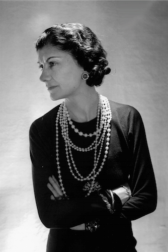
Коко Шанель
Взгляните на эти продукты, разработанные под руководством Дитера Рамса для Braun. Продукты, как и он сам, сдержанны, скромны и хорошо работают. Несмотря на то, они были созданы в середине прошлого века, эти продукты вдохновили на создание дизайна многих наших любимых современных гаджетов, что свидетельствует о выносливости и чистоте видения Рамса.
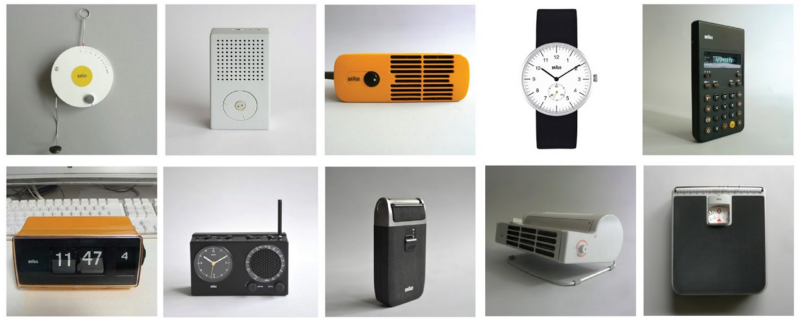
Продукты, разработанные под руководством Дитера Рамса для Braun
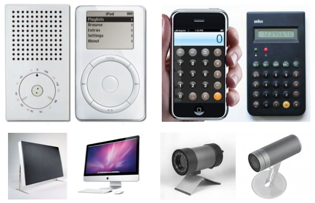
Дизайн Рамса вдохновил разработчиков Apple
Простота может заставить нас чувствовать себя уязвимыми, хотя на самом деле простота — это достижение и следует из глубокого самоанализа о том, что действительно имеет значение, результат завоеванной трудом ясности и фокуса. Эти действия отражают достоинства, такие как не-устремление, не-привязанность и преодоление страха. Хорошо разработанные продукты, как и их создатели, полны скромности: они не пытаются привлечь ваше внимание без всякой причины.
Многие из нас видели, как это выглядит в противоположном случае. Как много вас, дизайнеров, просили спрятать под дизайном функциональные проблемы продукта. Хотя это не решало проблем, подобно тому, как замазать синяк тональным кремом.
Вы когда-нибудь видели компанию, которая откажется от легкой прибыли путем внедрения бессмысленных доработок продукта? Это результат жадности.
Или как насчет команды разработчиков, которая продолжает добавлять новые функции только потому, что они могут? Это результат конкурентной борьбы, когда разработчик хочет навязать еще больше функций ради прибыли.
Или как насчет компании, которая не хочет принимать тяжелое решение снять с производства посредственный продукт, чтобы не разозлить пользователей? Это результат страха.
Страх, жадность и привязанность — это те чувства, которые могут одолеть любую компанию или разработчика. Они ослабляют наше стремление сделать продукт полезным для пользователя. Залог простой и понятной системы или продукта во многом зависит от способности разработчика противостоять этим чувствам.
История возвращения Стива Джобса в Apple в 1997 году ярко иллюстрирует этот момент. Когда Джобс вернулся в Apple, он упростил ассортимент продукции, сократив линейку продуктов от 350 до 10 единиц. Он утверждал, что на самом деле важно не то, что они делали, а то, что они не делали. Вместо того, чтобы производить так много продуктов, Джобс сосредоточился на нескольких, которые были тщательно усовершенствованы.
У Джобса было четкое намерение, стремление к качеству над количеством. Многие руководители тоже могли бы так поступить, но у них не хватает духа принять такое тяжелое решение, но на самом деле не хотят сделать трудный выбор. Подумайте, как эмоционально трудно это может быть, чтобы сократить продукты, которые уже были разработаны и изготовлены и ликвидировать рабочие места для 3000 сотрудников. Джобс не боялся сделать трудный выбор, который сделает его непопулярным. Он был готов рисковать своей популярностью с другими в погоне за отстаивание его видения, которое, как он считал, сохранило бы бизнес и лучше служило пользователям. Он превзошел любые чувства жадности, привязанности и страха, которые могут сопровождать такое решение.
Когда мы опасаемся, жадничаем или привязываемся, наши действия отражаются в сложности и беспорядке дизайна. Чем больше мы способны преодолеть наши убеждения о нашей Сущности, тем лучше мы можем создать отличный дизайн, который четко выражает наше намерение. То, что мы создаем, отражает наше внутреннее состояние.
Поскольку мы создаем воплощения нашей Сущности, мы передаем дальше эти наши атрибуты, видение и намерения другим людям, когда они потребляют то, что мы делаем. Дизайн является кульминацией намерения, ценности и принципов, проявляющихся в материальной форме и передающихся к другим. Конструкция формирует то, как мы думаем и чувствуем.
Адам Галинский, профессор Колумбийского университета, изучал то, как одежда влияет на то, что мы думаем о себе и нашей работе. Участникам предложили тест Струпа, где им показали названия различных цветов, распечатанных другим цветом, и попросили назвать цвет, который они видят. Это довольно сложный тест, потому что мы естественно склоняемся к тому, чтобы прочитать название цвета, а не цвет, который мы воспринимаем. Но те участники, которые были в белых халатах, значительно лучше выполнили этот тест, чем те, кто носил их обычную одежду.
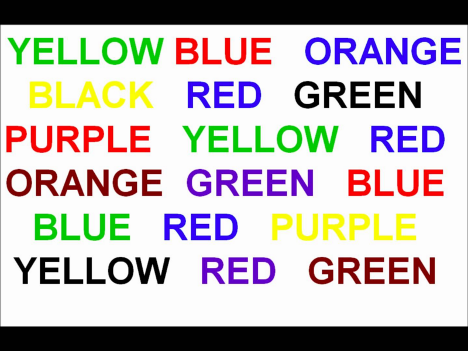
Тест Струпа
Что также интересно, что это произошло, когда участникам говорили, что они одеты в белые халаты. В другом варианте этого эксперимента, участникам говорили, что они были одеты в халат «художника». Тот же халат, но теперь его назвали халатом «художника». На этот раз они не выиграли в производительности на тесте Струпа. Почему? Потому что они сказали, что они проектировали определенный образ такого человека, который будет носить такой халат, как творческого художника, который не заботится о точности и производительности.
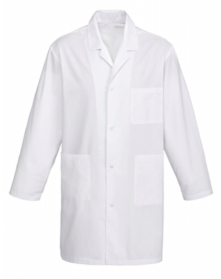
Белый халат или халат «художника»?
Эти участники были настроены, чтобы спроектировать определенный образ о белой одежде, но когда им сказали, что это было на самом деле, это, в свою очередь повлияло на то, как они выполняли тест. В обычной повседневной жизни, нам обычно не говорят, каковы психологические качества объектов, которые мы используем. Но когда что-то разработано с явным намерением, это намерение эффективнее направляется через создание и передачу получателю этого дизайна.
Вернемся к Коко Шанель. В маленьком черном платье Шанель женщины могут быть энергичными, организованными, серьезными, управляющими ситуацией, но в то же время изящными и модными. Когда женщина надевает платье Chanel, она воплощает в себе достоинства Chanel, проникшие в ее дизайн, независимо от того, знает ли она что-нибудь о том, кем была Коко Шанель.
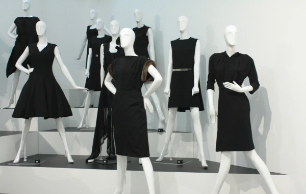
Рассмотрим часы Braun. Внешне они выглядят обычными невыразительными часами. Но на более глубоком уровне, они намекают на психологические или даже духовные идеалы чистоты, простоты и гармонии. Часы делает больше, чем говорят нам, который час. Они мягко подталкивают нас к присущим им идеалам. Это заставляет нас хотеть быть вовремя.
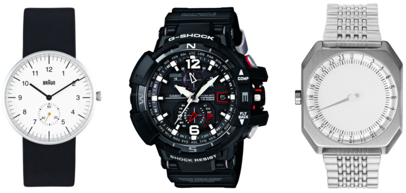
Слева направо: часы Braun, часы G-Shock Casio и часы Slow
Сопоставим часы Braun с часами G-Shock Casio. Главное преимущество часов — это их прочность, даже под давлением воды и удара. Человек, купив эти часы, таким образом заявляет, что он спортивный, крутой и крепкий.
Или возьмем часы Slow. Они имеют 24-часовой циферблат, в отличие от 12-часовых часов. Плотность цифр на часах означает, что вам совершенно невозможно провести различие между 3:41 или 3:42 вечера. Владелец этих часов не рассчитывает, чтобы его день был запланирован до минуты, а живет в большой прибавке времени, например 15ти минутах. Основатели Slow утверждают на своем сайте, что «Slow не скорость. Это образ мышления, который большинство из нас так или иначе потеряли. Давайте выкроим время, чтобы вернуть медлительность обратно в нашу жизнь. Будьте медлительны...» Основатели Slow ценят медленный темп жизни, и человек, который носит часы такого дизайна, также может жить в размеренном медленном темпе.
Мы не всегда можем осознать или не в состоянии описать, как вещи заставляют нас чувствовать себя, но мы ощущаем дух или энергию, которая исходит от них или опыт, который мы получаем от их использования.
Различные религии безоговорочно понимают эту связь между дизайном и его влиянием на человеческий дух. От богатых и показных и до обтекаемых и простых, культовые сооружения создавались в течение многих столетий, чтобы вызвать определенный набор достоинств и идеалов, и, возможно, приблизить людей немного ближе к Богу. Являетесь ли Вы религиозными или нет, вы можете остановиться и оценить красоту этих мест поклонения и молитвы, в результате чего станете немного ближе к безмятежности и невозмутимости.
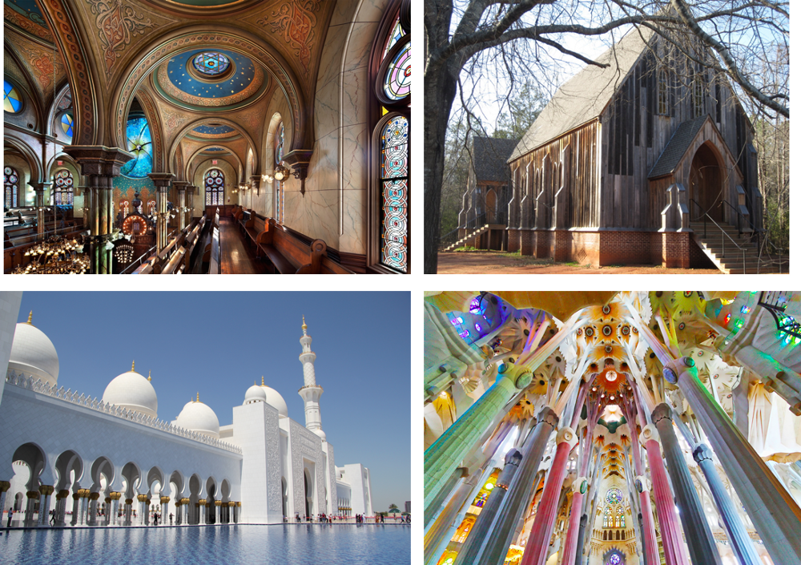
По часовой стрелке от верхнего левого угла: Синагога на Элдридж-стрит, Нью-Йорк; Епископальная церковь Святого Луки, штат Алабама; Собор Святого Семейства, Барселона, Испания; Большая мечеть шейха Заеда, Абу-Даби, ОАЭ
Хорошо спроектированный объект или пространство может выявить лучшее в нас. И наоборот, плохо спроектированный объект может представлять самые худшие стороны человеческой природы — жадность, нечувствительность, желание одержать победу, независимо от того, какой ценой она достанется. Насколько красота сулит совершенство, настолько уродство вызывает отчаяние, страдание и безнравственность.
Ян Флеминг, автор серии о Джеймсе Бонде, безоговорочно понимал это. Один из его самых известных злодеев, Голдфингер, был назван в честь реального человека по имени Эрно Голдфингер. Эрно Голдфингер был архитектором, который был известен тем, что создавал гигантские, неповоротливые, строгие бетонные здания, которые были характерны для брутального архитектурного движения.
Эта архитектурная тенденция, популярная в 1950-х и 60-х, была известна использованием дешевых бетонных строительных материалов и стала популярной после Второй мировой войны, поскольку обеспечивала чувство безопасности в тех областях, которые были опустошены во время взрывов. Брутализм также ассоциируется с социалистической утопической идеологией, царившей в европейских коммунистических странах с середины 1960-х до конца 1980-х годов. Основные черты стиля пробуждают в воображении образы тоталитаризма, насилия, силы и суровой утилитарности. Суровые экстерьеры этих зданий предстают прозаическими и пресными. Флеминг раскрывал уродство брутализма как зло, воплощенное в его вымышленном злодее Голдфингере.
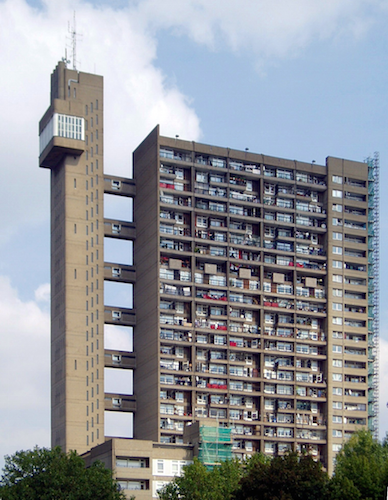
Башня Trellick, Северный Кенсингтон, разработанная Эрно Голдфингером
Когда положительные идеалы проявляются в объектах и продуктах, которые мы используем, эти объекты и продукты играют своего рода позитивную психологическую или духовную роль в нашей жизни. Хорошо продуманные продукты — это терпение, стойкость, итерация, фокус, сопереживание. Когда мы регулярно используем эти продукты, они дают нам возможность приблизиться к своему идеалу. Когда они содержатся в физических вещах и психологических качествах, то так или иначе часто перемежаются в наших мыслях и ведут себя более стабильно и постоянно. Происходит внутренняя эволюция, именно поэтому мы формируем эмоциональную связь с вещами с хорошим дизайном. Способность дизайна влиять на то, как мы думаем и чувствуем, выходит за рамки физических объектов и пространств и простирается в эфемерный опыт, подобно дизайну услуг и цифровому дизайну продукта.
Например, с помощью Google, Ларри и Сергей нацелились на создание мощной технологии, которая помогает людям эффективно находить информацию. Они изобрели алгоритмы, которые позволили легко находить информацию, но не остановились на достигнутом. Они потратили миллиарды долларов капитальных затрат на создание инфраструктуры, чтобы сделать веб-поиск как можно более быстрым. Они отстаивали цели компании, называемые OKRs, сосредоточенные вокруг латентности (времени, которое требуется, чтобы получить ответ от поискового запроса). Они также сделали это, привнеся в жизнь набор ценностей, связанных с эффективностью и масштабом посредством усовершенствованного интерфейса. Все, что сделано в Google, было приоритетным по созданию мощного, эффективного инструмента. Используя Google для поиска в Интернете или управления нашей электронной почты, документами и фотографиями, мы в свою очередь, чувствуем себя сильными, производительными и способными.
Нам нужен хороший дизайн в мире, и не потому, что мы хотим быть экстравагантными или чрезмерными, не для того, чтобы заставить людей покупать больше вещей, а потому, что хороший дизайн помогает нам быть лучшей версией себя.
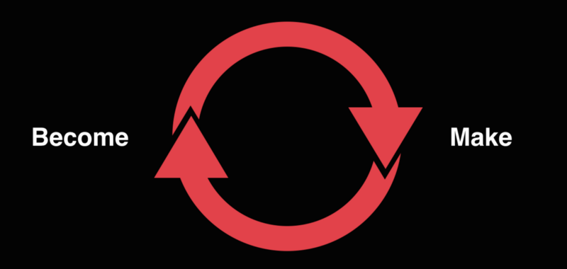
Перевод статьи: Irene Au: Design and the Self.
https://medium.com/design-your-life/design-and-the-self-a5670a000fee#.6fec59pto